Transform tables are a container to operate batch analysis of objects or of tabular data derived from objects. A transform table allows users to derive columns based on the properties of input objects (including time series) and provides joining and grouping functionality for object data.
Due to the computational intensity of these operations, a maximum of 50,000 rows are allowed in a transform table.
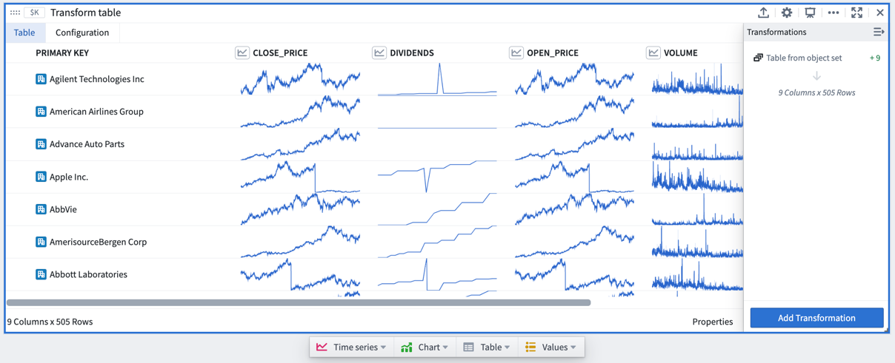
Transform tables allow you to:
The transform table search window, accessible in a transform table through the Add Transformation button, shows all available transformations grouped by transform action type, such as edit columns, filter, time series operations, or null/error handling. While most transformations will add new columns of their respective type, some will change the shape of the table (for example, when joining other object types or grouping the table into categories to aggregate the rows).
Transform tables transforms can also be added directly from the next actions menu by selecting the Transform category and a transform. This action will add a transform table card to the analysis with the selected transform applied to the table.

Transforms can also be applied on a single supported input outside of a transform table, operating once on that value only rather than as a batch operation in a table.
To add a transform card to the analysis, simply search for it using the search window available at the top menu bar.
A transform table can take in various types of inputs, including object sets, categorical charts, time series charts, time series plots, datasets, pivot tables, and other transform tables. Users can also manually input data to construct a transform table.
To add a transform table to your analysis, select Transform table in the top Tables menu. This will open the editor panel, where you can select existing inputs that are eligible for your analysis.

Object sets are the most common input to a transform table.
You can create a transform table from any object set in your analysis from the Next Actions menu by selecting Convert > Transform table.
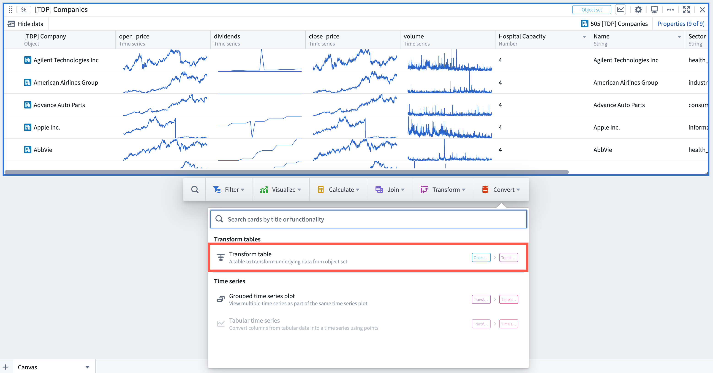
Note that there is a limit of 50,000 rows per transform table (whether from starting or from joining), so you will only be able to create transform tables with fewer than 50,000 objects.
When a transform table is created from an object set, it will have one row per object in the set, a Primary Key column representing each objectâs unique ID, and columns for each of the prominent properties of the object (as defined in the Ontology), or, if there are no prominent properties, the first properties on the object (up to 20).
Add or remove property columns, as well as any linked sensor objects to the object set, by clicking the Properties button on the bottom right corner of the table. Drag the columns to reorder them in the table.
You can set different column configurations for each transformation step of the transform table. Learn more about formatting a transform table in the section below.

Bar, line, and scatter plots can all be inputs to a transform table. Using these inputs will show the categories and values on your chart and will not pull in the underlying data. To pull in underlying data, you should use the object set from which you created the chart. You can create a transform table from a categorical chart by selecting the chart, clicking the Next Actions menu, then selecting Table > Transform table.
Time series plots can be an input to the table, converting the time series data into tabular format where it can be manipulated, edited, or enriched.
To create a transform table from a time series plot, select a specific time series plot from the chart. Then, select Table > Transform table in the Next Actions menu at the bottom of the time series chart.

Then, select from the available Range Options in the transform editor panel:
Transform tables are limited to 50,000 rows for performance reasons; the transform table pulls data into the frontend for operation, rather than pushing data to a backend service. Therefore, the time series data may need to be sampled (bucketed) to fit.
You can select how to convert the time series data into tabular format in the Data Options:

The timestamp series data will show in UTC by default. The timestamp timezone can be changed to the user's timezone or a different static timezone in the column setting of the transform table editor.

Time series charts can be an input to the table, opening each time series plot in the chart as one row in the table.
To create a transform table from a time series chart, select the time series chart (rather than a specific time series plot). Then, select Table > Table from chart's time series in the Next Actions menu at the bottom of the time series chart.

Pivoted data can be an input to the transform table, enabling you to use formulas to operate on pivot table columns. As with charts, creating a transform table from a pivot table will not bring in its input data, but rather the pivoted data itself. A transform table can also be an input for a transform table. This is useful in cases where you want to split transformation logic into "blocks" of logic steps, or to separate data transformation and data formatting. You can create a transform table from another table by selecting Table in the Next Actions menu at the bottom of the table card.
Users can manually enter up to 5,000 rows of data to create a new transform table. The manual entry transform table card has a spreadsheet-like user interface and supports five data types: string, number, boolean, time, and time series. Users can interact with and apply operations on manual entry transform tables the same way as other transform tables.
To add a new manual entry transform table to a Quiver canvas, select Manual Entry in the analysis header or search for the table in the Search cards dialog.
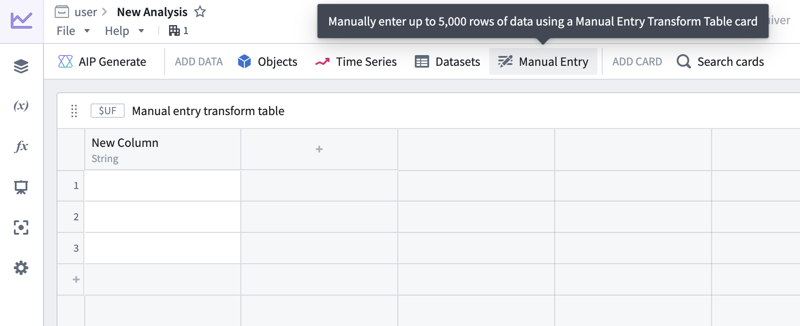
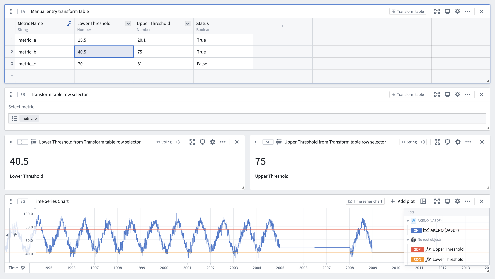
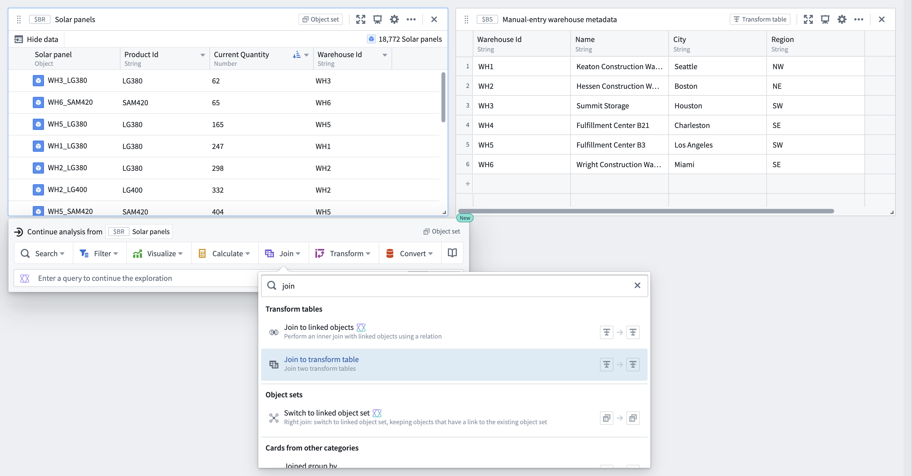
From the joined object set and manual entry transform table, configure the Join to transform table transform to specify the join conditions.
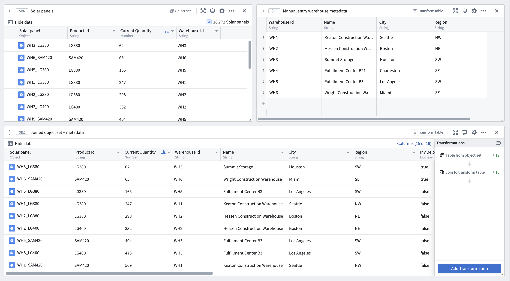
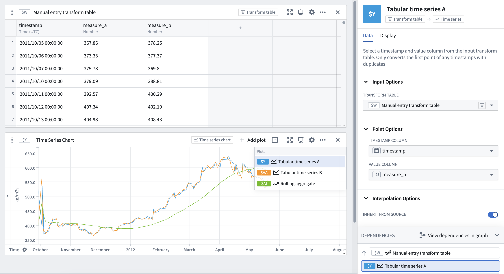
By default, manual entry transform tables generate a random unique primary key for each row, but users can choose to set a column as the table's primary key. Primary keys propagate downstream and are made available as unique identifiers in other cards, such as transform table row selectors.
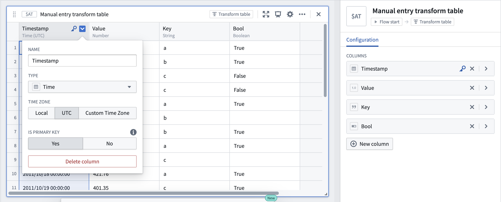
:::callout{theme="neutral"} For time series data larger than 5,000 rows, or to reuse time series data across Foundry, set up a time series sync for improved performance and reusability. :::
Ontology SQL results can be used as an input to a transform table, converting the SQL query results into a tabular format where they can be further manipulated, enriched, or visualized.
To create a transform table from an Ontology SQL card, select the Ontology SQL card, then select Convert > Transform tables in the Next Actions menu at the bottom of the card.
When an Ontology SQL card is converted to a transform table, the columns correspond to the columns returned by the SQL query. You can then apply any transform table operations such as filtering, grouping, deriving new columns, or charting on the resulting data.
There are four primary categories of outputs from a transform table: time series, charts, tables, and values. Transform table outputs can be added via the Next Actions menu at the bottom of the table.

There are several ways to output time series data from a transform table:


You can create line charts, categorical scatter plots, bar charts, or Vega plots from transform table data. These charts can be used in Quiver for any functionality that takes a chart as input, such as a categorical formula plot or an overlay chart.
You can start a New transform table off of an existing transform table to provide a view that can be formatted and organized separately from the underlying data.
You can create a pivot transform table from a transform table to display aggregated data.
You can aggregate columns of the transform table and output these as numbers or arrays on metric cards. These metrics can be used in Quiver for any functionality that takes numbers or arrays as inputs.
To add a computed column, select Add Transformation, then select the tab that corresponds to the type of data you want to create: numeric, date/time, string, Boolean, array, or time series.
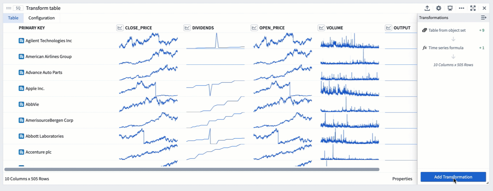
For the full list of transformations available to create columns, refer to the index of transform table transformations.
When a transform table has an object set as its input, you can use the Ontology to join linked objects into the table. This transformation is called Join to Linked Objects and can be found under the Tables tab in the transformations menu.

When you join an object set to other linked objects, you will be prompted to select the link type, which is the connection between your starting objects and the incoming objects. The resulting table will have a new joined primary key; this is a combination of the primary key of your starting set and the primary key of the incoming set. The new joined primary key will add the properties of your incoming objects onto each existing row, increasing the number of columns.

If your starting objects only connect to one incoming object (that is, either a âone-to-one" or "many-to-one" link type), the number of rows will not increase. If there are many incoming objects for each starting object (in other words, a "one-to-manyâ link type), the number of rows in your table will increase.
In the example below, we start a transform table from an object set of Companies. Initially this table has 505 rows (1 per object). We then add a Join to Linked Objects transform, to add linked Stock Event objects. Now, the table has 11,149 rows, the primary key is the combination of both objectsâ primary keys, and columns from the Stock Event objects have been added.
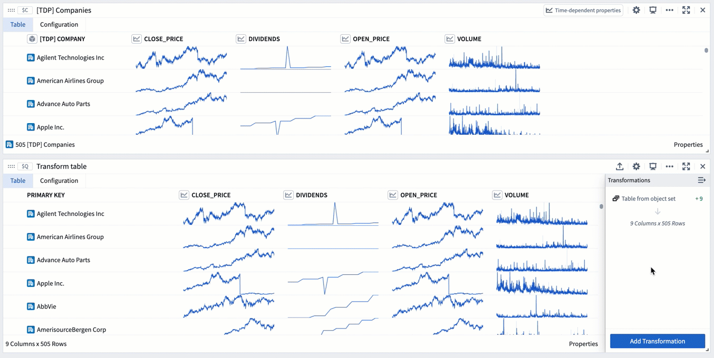
The Join transform can be found under the Tables tab in the transformations menu. Similar to a SQL join operation, it allows you to combine two transform tables while specifying the match condition (indicated by the green box in the image below).
To perform a join:
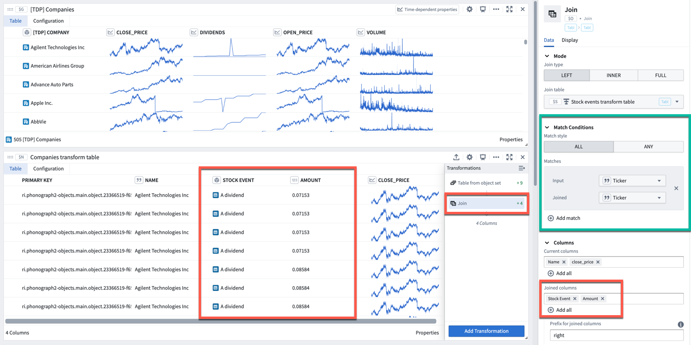
The Cross Join transform allows you to combine two transform tables by performing a Cartesian â join. A cross join generates a row for every paired combination of a row from the first table and a row from the second table. It does not join based on a specific column.
Grouping is the action of aggregating a collection of values over some pre-defined window or bucket. There are two ways you can do this in the Transform Table:
In a Group By, you create one category for each property in your Group By column. For each category, all of the associated time-based, numeric, and time series columns become arrays of values (also called groups). Array transformations and aggregations can be performed over these arrays (groups).
For example, the transform table below shows a set of worldwide weather stations with different elevation values. We can group these stations by the country they are located in to create arrays of the elevation values per country.
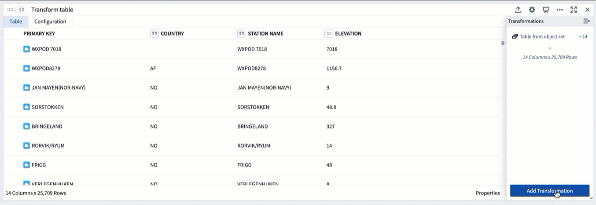
If we want to do an aggregate over these elevation values, for example calculating the average elevation for each country, we can use the Numeric Group Aggregation transformation, which will add a column to the table returning the average of the input column we select (here, elevation_array).
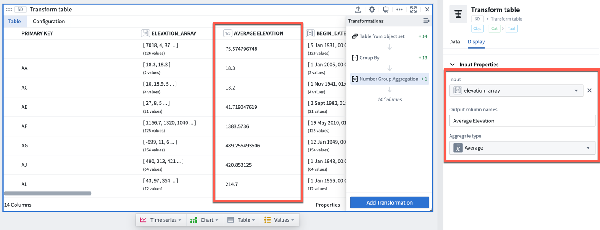
Joined Group By is useful when you want to calculate some windowed and aggregated quantity (e.g. the average roof height per category, above), but want to keep the same number of rows in your table (one per building) while adding a new column for the aggregate metric.
Performing a Joined Group By transform will add an array of values column for each property that is not part of the group by category the object belongs to (indicated by the green boxes in the image below). You will then need to add an aggregation transformation to compute values on these arrays (indicated by the red boxes in the image below).
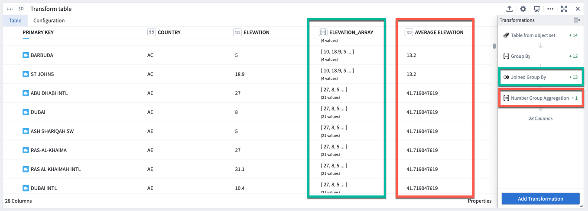
The transform table is designed to enable batch analysis of time series. This means that transformations such as filters, derivatives, or cumulative aggregates can now be applied to more than one time series at a time. For a comprehensive guide on batch time series analysis, see batch analyze time series.
For more information on the individual time series transformations included, refer to the index of transform table transforms.
There are three methods for adding time series column to a transform table, depending on the category of data to be transformed; these methods are:
By default (and for performance reasons), sparklines of time series data are not shown unless you explicitly add them. If you have created a transform table that includes time series or sensor objects, you can include them by adding a Time Series Object transform, and selecting the primary key of the time series object.
Objects that have been marked as root objects and have time series objects connected to them in the Ontology can have their linked series displayed purely by adding a Linked Sensor column. To do this, select Linked Time Series Sensor and select the primary key of the parent object.
The transform table enables a group of dates or times to be turned into a time series, just as a bar or line chart of objects can be turned into a time series outside of the transform table. To do this, first select Group by to create groups of dates and groups of numeric values. Then, select Group to Time Series and select the date/time group as the date group property and the number/value group as the numeric group property.
For example, the transform table below shows a set of stock dividend events with different dividend values. If we want to create a time series using these dividend values, we can do the following:
amount_array in this case), plotted over the date group property (start_ts_array).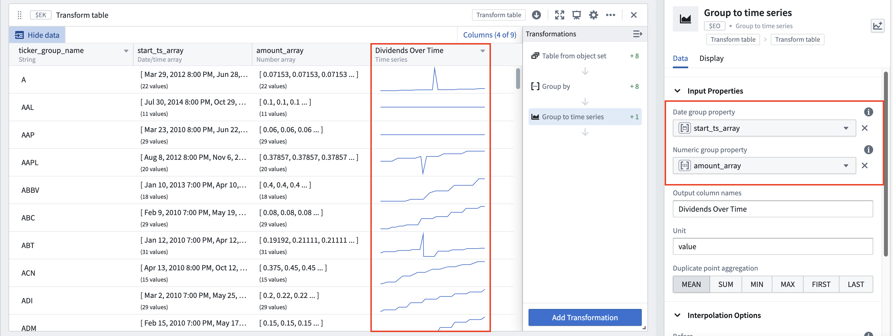
The columns of a transform table can be formatted with customizable widths and heights, as can the individual values themselves. All formatting occurs in the Display tab of a Transform Table.
All columns, numeric or otherwise, contain formatting options for statically setting column widths and minimum heights.


Columns can be renamed by adding a Rename columns transformation from the transformations menu.

In addition, numeric columns have value and conditional formatting options, with the following controls:


Time series columns in transform tables render sparklines of the associated time series property. By default, sparklines show the full extent of data in the series. This can be changed from the Display tab of the editor:
You can follow the same steps to configure the view range for sparklines in object set tables.
There are four ways to set the view range for sparklines:
2025-5-21 to 2025-06-04.2 weeks ago to Now. By default, the range's end date is set to Now, but a specific time can be input by selecting the Set to relative time toggle on the top right.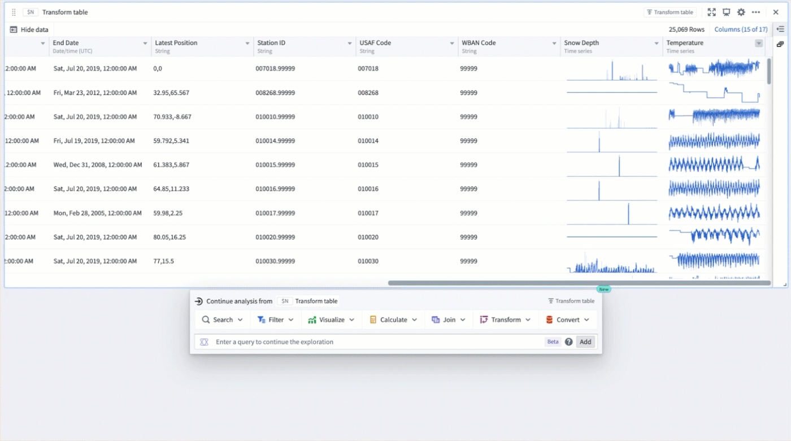
Yes. Group-by time series (the ability to create a time series from a bar plot, and then segment it into several time series) are available with a transform Table. You can create a group-by time series using the Group to Time Series function with a group of dates or times, and a group of values.
See time series in transform tables for more information.
Yes, you can use parameters or manually input values in order to format the cells of the Table according to user-defined logic rules.
See the documentation on formatting a transform table for more information.
The transform table has a limit of 50,000 rows for performance reasons, since the transform table pulls data into the frontend for operation, rather than pushing data to a backend service.
Yes. There are four outputs from the transform table: time series, tables, charts, and values (metric cards). See the documentation on transform table outputs for more information.
No. Though it is common to use objects in a transform table, you can also use a transform table to operate on time series data, chart data, or tables such as pivot tables or other transform tables. Note that when working with chart data or pivot tables, the rows will lose their connection to the underlying objects and you will be able to operate on the aggregates, but not link back to the underlying data. This opens up the ability to perform column-wise operations on a pivot table, as well as the ability to create and operate on plot data in tabular form.
See the documentation on transform table inputs for more information.